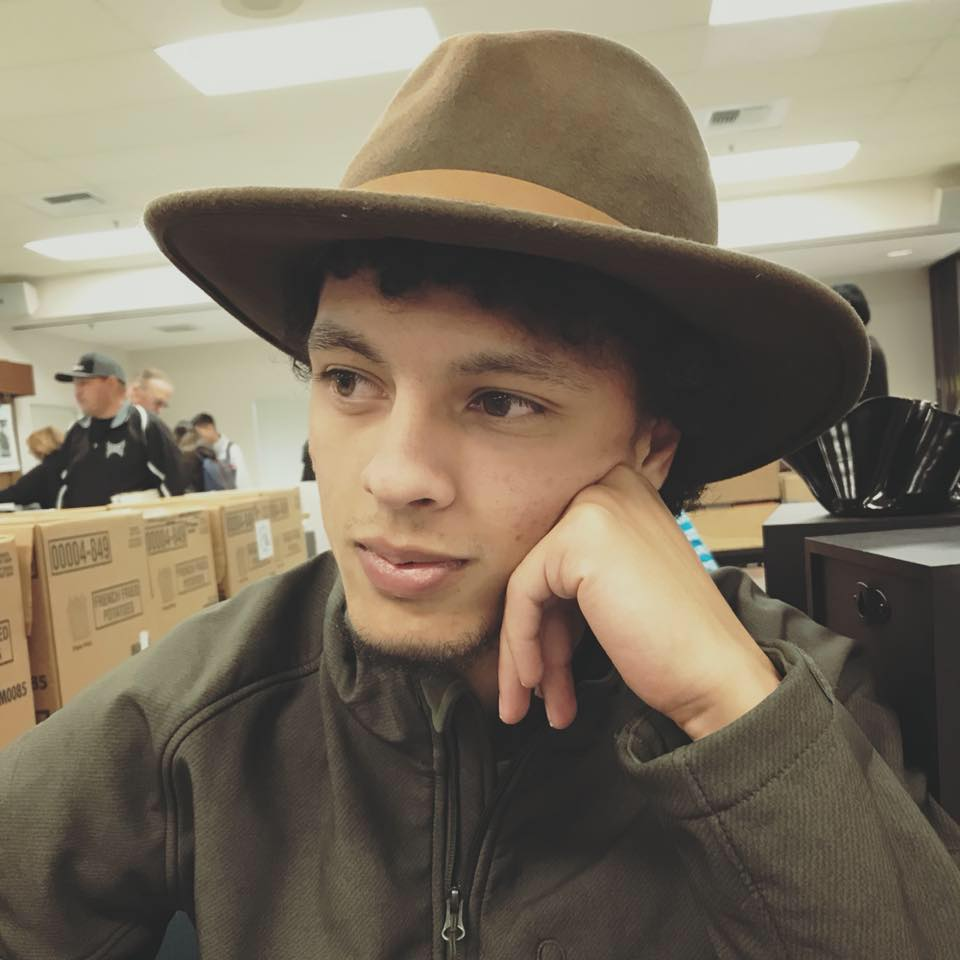

About Me

Hi there! My name is Jordan Carlile. I am an aspiring software engineer from Sacramento, California. I am currently a 4th year undergraduate computer science student at University of California, Davis. In addition to having an academic computer science background, I also have taken it upon myself to learn web development.
Though software development is my primary hobby, I also enjoy dancing, playing board games, and traveling. Please feel free to look through my portfolio, Github, and LinkedIn pages. If you would like to contact me, feel free to use the form provided on my "Contact" page listed above.